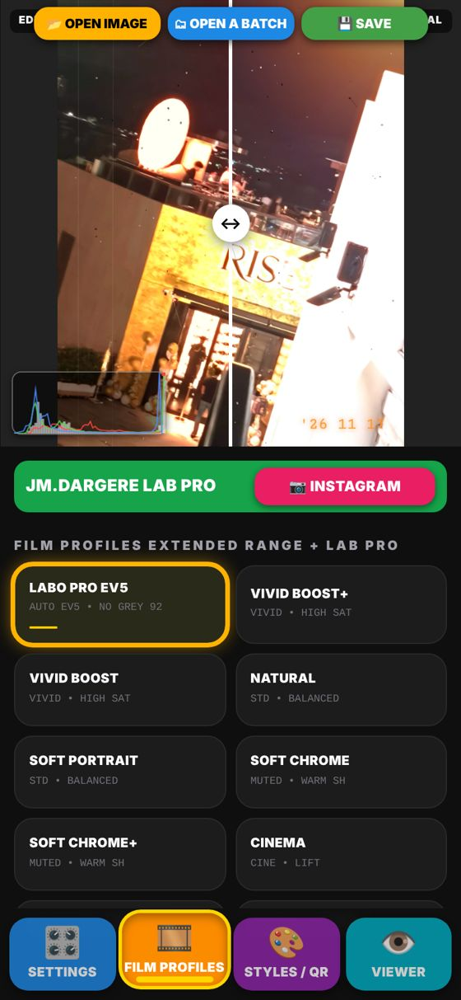
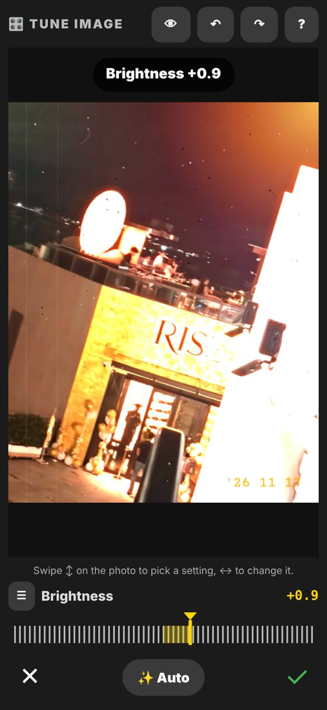
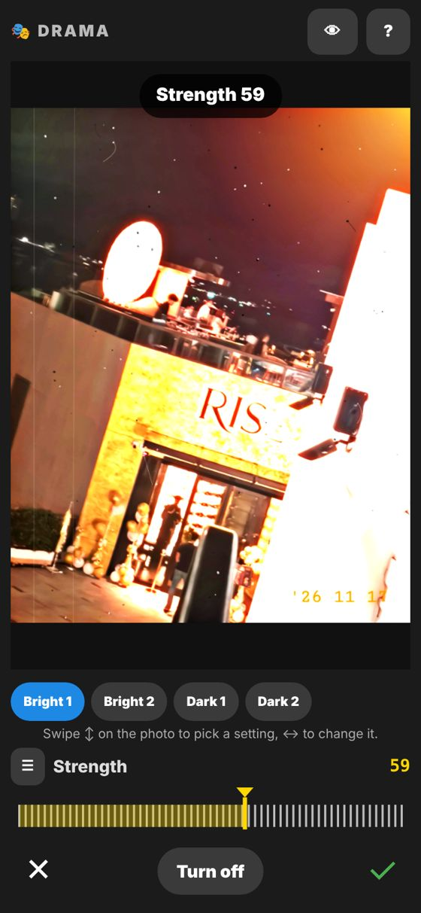
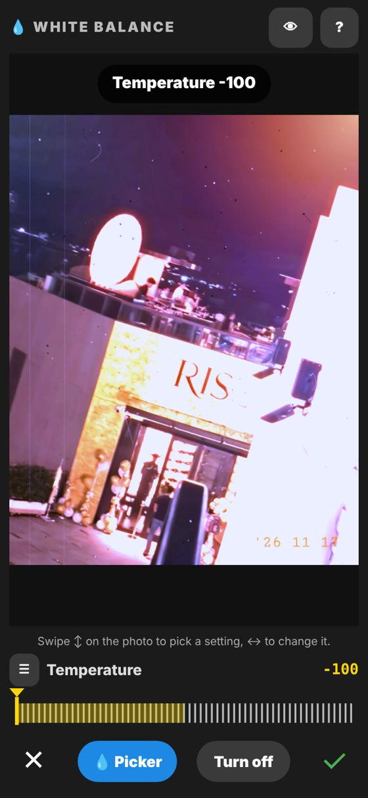
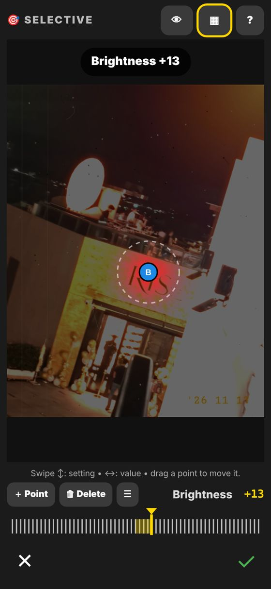
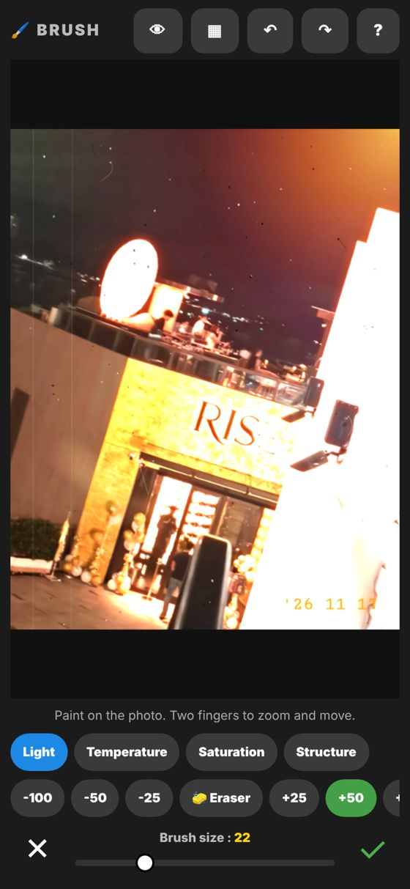
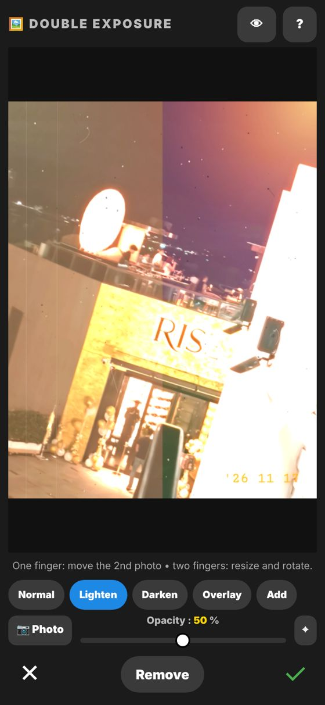

JM LAB PRO
User guide
Offline photo editing
by JM.Dargère
by JM.Dargère
Version 4.12 • November 2026
SETTINGS • FILM PROFILES • STYLES / QR • VIEWER


Tap a profile: the photo takes its look at once. The chosen profile is outlined in yellow.
At the top, the 🧰 TOOLS button opens the tools grid, sorted by family: Adjust (Tune, Details, Curves, White balance, Tonal contrast), Local (Selective, Brush, Healing), Framing (Crop), Creative (Drama, HDR, Double exposure, Glamour glow, Effects).
A yellow dot marks a tool in use; the TOOLS button lists the tools used.
The checkbox turns the automatic correction on or off (automatic exposure + LABO PRO look). Strength: 65 % by default. Highlight protection (30 % by default): avoids blown areas and colour shifts in very bright parts.
Light and colour adjustments are made with 🎛️ Tune (chapter 3). RESET sets everything back (ProLab at 65 %).
Works like Snapseed's Tune Image tool: everything is done by sliding your finger on the photo.
Swipe up or down: the list appears. Lift your finger on the setting you want: Brightness, Contrast, Saturation, Ambiance, Highlights, Shadows, Warmth, Tint, Structure, Blacks, Whites, Dehaze, Vignette.
Or tap ☰ at the bottom.
Swipe right (more) or left (less). The value shows at the top, and on the yellow ruler at the bottom. You can also tap the ruler directly.



Three tools from the Adjust / Creative families, in 🧰 TOOLS. Same gestures as Tune image: ↕ to pick the setting, ↔ to change it, hold 👁 to see without the tool, ⛶ to view large, Turn off to reset everything.


▦ shows the affected area in red.


Like Snapseed's Healing tool: it removes dust, a blemish, a wire, a small spot.

Darker sky, brighter face, smooth skin, gradient, grain, black and white, noise reduction, ready-to-post format, watermark.

Tap 💾 SAVE. A banner shows the processing time, then ✔ SAVED with the file name. The original photo is never changed: the copy ends with _JMD_LAB_PRO.jpg.
| What you do | Where it goes |
|---|---|
| 💾 SAVE (one photo) | Pictures › JM LAB PRO |
| Batch with “🖼️ Gallery” | Pictures › JM LAB PRO › batch name |
| Batch with “📂 Chosen folder” | The chosen folder (SD card, USB key…) › batch name |
| Batch ZIP | Downloads › JM LAB PRO |
| Viewer | The save folder chosen in the viewer |
| Deleted photos (viewer) | _SUPPRIMES folder (recoverable) |
| Backups of your styles | Pictures › JM LAB PRO › Sauvegardes |
| Exported styles, this guide | Downloads › JM LAB PRO |
In the Gallery or Google Photos: JM LAB PRO album. Or in the Files app: Pictures › JM LAB PRO.
ProLab correction + profile + Tune image + every active tool (yellow dot in 🧰 TOOLS) + Effects + Frame and signature if turned on. The ⛶ final preview shows this result before saving.


STYLES / QR tab:
Tap JM.DARGERE LAB PRO in the green banner.